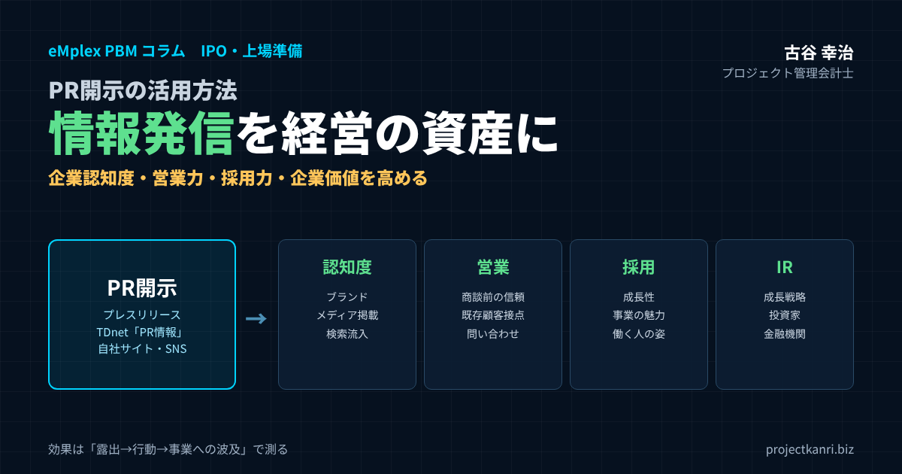

PR開示の活用方法とは？企業認知度・営業力・採用力・企業価値を高める情報発信戦略―プレスリリースとTDnetの「PR情報」、適時開示・法定開示との違い、営業・採用・IRへの活用、効果測定とKPI

結論：PR開示は「広報の作業」ではなく「経営の資産づくり」
この記事のポイント
- PR開示は広報の作業ではなく経営の資産づくり
- 上場企業のPR開示は適時開示・法定開示とは別。開示義務のある情報の代わりにはならない
- TDnetの「PR情報」は投資判断上有用な会社情報以外の会社情報
- 活用先は認知度・営業・採用・IRの4つ。営業・人事・IRと広報が連携する
- 効果は露出→行動→事業への波及の3段階で測り、経営会議で振り返る
プロジェクト管理会計士の古谷です。私は、上場企業のホリプロで経営企画の責任者として開示の業務を担当し、その後、フロンティアハウスでは上場の準備と経営企画、広報とIRの責任者として、TOKYO PRO Marketへの上場に携わりました。開示と広報の両方の現場に立ってきた経験から、PR開示についてよくいただくのが、「プレスリリースを出しても、効果があるのかよく分からない」というご相談です。
プレスリリースを出すこと自体は、それほど難しくありません。しかし、出したプレスリリースが、営業の現場で使われ、採用の候補者に読まれ、投資家や金融機関との対話の材料になり、問い合わせや商談につながっているか。そこまで追いかけている会社は、決して多くありません。
本記事でお伝えしたいのは、PR開示を単なる広報の作業ではなく、会社の成長を支える経営の戦略の一部として位置づけるという考え方です。発信のテーマを経営の戦略から選び、営業、採用、IRのそれぞれの場面で活用し、その成果を閲覧数、問い合わせの数、商談の数などで測る。そして、継続的な発信を通じて、会社の認知と信頼を積み上げていく。これが、PR開示を経営の資産にする方法です。
なお、上場企業の場合、PR開示は、証券取引所の規則に基づく適時開示や、法令に基づく法定開示とは別のものです。開示すべき情報を、プレスリリースで代わりに発信することはできません。この違いを正しく理解したうえで、PR開示を活用することが大切です。
PR開示とは何か
PR開示という言葉は、広い意味では、企業が自らの意思で、製品やサービス、事業の取り組み、組織の動きなどの情報を、社会に向けて発信することを指します。その代表的な手段が、プレスリリースです。
上場企業の場合には、もう少し具体的な意味もあります。東京証券取引所などが運営する適時開示の仕組みであるTDnetでは、適時開示情報とは別に、「PR情報」として会社の情報を開示することができます。日本取引所グループの説明では、PR情報は、投資判断上有用な会社情報以外の会社情報と位置づけられています。
| 形 | 内容 | 主な発信先 |
|---|---|---|
| TDnetの「PR情報」 | 上場企業が投資判断上有用な会社情報以外の会社情報を開示 | TDnet |
| プレスリリース | 企業が報道機関などに向けて発表する情報 | 配信サービス、記者クラブ、メディア |
| 自社サイトのニュース・IRサイト | 企業のサイトでの情報の掲載 | 自社サイト |
| SNS・メールマガジン | 顧客・求職者などへの直接の発信 | SNS、メール |
本記事では、上場企業がTDnetのPR情報として行う開示と、上場しているかどうかにかかわらず企業がプレスリリースなどで行う自主的な情報発信の両方を含めて、「PR開示」と呼ぶことにします。どちらも、企業が自らの意思で、自社の情報を社会に届ける取り組みであり、その活用の考え方は共通しているからです。
PR開示で発信される情報は、新しい製品やサービスの発表、業務の提携、新しい拠点の開設、受賞、イベントやセミナーの開催、調査の結果、経営者の就任、採用の取り組みなど、多岐にわたります。こうした情報は、一つひとつは小さくても、積み重なることで、会社がどのような事業を営み、どこに向かっているのかを、社会に伝える力を持っています。
PR開示とプレスリリース・IR・適時開示・法定開示の違い
PR開示を正しく活用するためには、企業の情報開示の制度の中での位置づけを理解しておくことが欠かせません。企業の情報開示は、大きく、法定開示、適時開示、任意開示の三つに分けられます。
| 法定開示 | 適時開示 | 任意開示（PR開示を含む） | |
|---|---|---|---|
| 根拠 | 会社法・金融商品取引法など | 証券取引所の規則 | 企業の自主的な判断 |
| 主な開示先 | EDINETなど | TDnet | TDnetのPR情報、IRサイト、プレスリリース |
| 代表例 | 有価証券報告書、半期報告書、臨時報告書 | 決算短信、業績予想の修正、M&Aなどの重要事実 | 決算説明会資料、統合報告書、事業・製品に関する情報 |
| 義務 | あり | あり（上場企業） | なし |
法定開示は、会社法や金融商品取引法などに基づいて義務づけられている開示で、有価証券報告書などがEDINETなどを通じて開示されます。適時開示は、証券取引所の規則に基づいて、上場企業に義務づけられている開示で、重要な会社の情報が生じたときに速やかに開示する必要があり、TDnetを通じて行われます。
これに対して、任意開示は、企業が自らの判断で行う開示です。決算の説明会の資料、統合報告書、事業や製品に関する情報などがこれにあたり、TDnetのPR情報、自社のIRのサイト、プレスリリースなどが手段になります。IRや広報がプレスリリースで扱う情報の多くは、この任意開示にあたります。
ここで大切なのは、法定開示と適時開示は、EDINETやTDnetでの開示が義務づけられており、プレスリリースはその代わりにはならない、という点です。プレスリリースは、適時開示を済ませたうえでの補足の発信や、任意開示の手段として使います。
また、IRと広報の違いも整理しておきましょう。IRは、投資家や株主、アナリストを主な対象として、投資の判断に役立つ情報を、公平に、適時に提供する活動です。広報は、顧客、取引先、地域社会、求職者、メディアなど、より幅広い相手を対象として、会社への理解と信頼を高める活動です。対象と目的は異なりますが、同じ会社の情報を発信する活動として、両者が連携し、メッセージを一貫させることが大切です。
このように、PR開示は、法定開示と適時開示という義務の開示の外側にある、企業の自由な発信の領域です。義務の開示が、投資家の保護のために必要な最低限の情報を公平に届ける仕組みだとすれば、PR開示は、会社が自らの言葉で、自社の魅力や取り組みを、より幅広い相手に伝える仕組みだと言えます。両者の役割の違いを理解して使い分けることが、上場企業の情報発信の基本です。
上場企業が迷いやすい「適時開示」と「PR情報」の使い分け
上場企業の担当者が実務で迷いやすいのが、ある情報を、適時開示として開示すべきか、PR情報として開示すべきかという判断です。
取引所の考え方として示されているのは、次のような使い分けです。適時開示の規則の上で開示の義務がある場合には、適時開示情報として開示する必要があります。また、規則の上での開示の義務はなくても、一定程度業績に与える影響が見込まれる場合や、決算に関する会社説明会の資料、月次の業績の速報、経営計画に関する資料などは、投資判断の上で有用であると考えられることから、適時開示情報として開示することが求められています。
一方、単なる組織の変更や社員の人事の異動、定例的な販売のキャンペーンの開始など、業績に与える影響がほとんど見込まれないものや、投資判断の上での有用性が必ずしも明確でない会社の情報については、原則として、適時開示情報ではなくPR情報等として開示することとされています。また、適時開示情報とPR情報等とでは、適時開示情報閲覧サービスへの掲載の有無という点で、情報が掲載される範囲が異なります。
| 区分 | 例 |
|---|---|
| 適時開示情報 | 規則上の開示義務がある情報 |
| 適時開示情報 | 開示義務はないが業績に一定の影響が見込まれる情報、決算説明会資料、月次業績速報、経営計画の資料 |
| PR情報等 | 単なる組織変更、社員の人事異動、定例的な販売キャンペーンの開始など、業績への影響がほとんど見込まれない情報 |
取引所の考え方の要旨です。判断に迷う場合は取引所の開示担当者にご相談ください。
判断に迷う場合は、自社だけで決めず、取引所の開示の担当者に相談することをおすすめします。そして、判断の考え方を社内の開示の手続きとして文書にしておくと、担当者が替わっても、同じ基準で判断することができます。適時開示の判断を誤ると、投資家の判断に影響を与えるだけでなく、会社の信頼にも関わります。PR開示を活用するうえでも、まず開示の義務のある情報を確実に開示する体制を整えておくことが、すべての前提になります。
企業がPR開示を行う目的とメリット
それでは、企業がPR開示を行う目的とメリットは、どこにあるのでしょうか。私は、大きく五つの目的があると考えています。
| 目的 | 内容 |
|---|---|
| ① 認知度・ブランド | 会社の名前と事業を社会に覚えてもらう |
| ② 営業 | 商談前の信頼形成、既存顧客との接点、問い合わせの獲得 |
| ③ 採用 | 成長性と事業の魅力を伝え、応募の動機づけに |
| ④ IR・金融機関 | 成長戦略の実行を伝える |
| ⑤ 企業価値 | 認知と信頼の積み上げ |
一つ目は、会社の認知度とブランドの価値を高めることです。どれほど良い製品やサービスを持っていても、知られていなければ選ばれません。継続的な発信は、会社の名前と事業を、社会に覚えてもらうための基本の取り組みです。
二つ目は、営業の活動を支えることです。新しい顧客に会うとき、相手は事前に会社の名前を検索します。そこで、会社の最新の取り組みや実績が分かるプレスリリースや記事が見つかれば、商談の前から信頼の土台ができます。
三つ目は、採用の競争力を高めることです。求職者は、応募する前に会社のことを調べます。会社の成長性、事業の魅力、働く人の姿が伝わる情報が発信されていれば、応募の動機づけになり、入社の後のミスマッチも減らせます。
四つ目は、投資家や金融機関に、会社の成長の戦略を伝えることです。決算の数字だけでは、会社がどのような取り組みを進めているのかは伝わりません。新しい事業や提携の発信は、成長の戦略が着実に実行されていることを示す材料になります。
五つ目は、こうした積み重ねを通じて、企業価値を高めることです。継続的な情報発信は、会社への認知と信頼を積み上げ、顧客、社員、投資家、取引先との関係を強くします。それが、長い目で見た企業価値の向上につながります。
これらの目的は、どれか一つを選ぶものではありません。一つのプレスリリースが、顧客には新しいサービスの案内として、求職者には会社の成長の証として、投資家には戦略の実行の報告として、それぞれ異なる意味を持って届きます。発信のテーマを選ぶときに、どの相手に、どのような意味を持つのかを、あらかじめ考えておくことが大切です。
活用方法①：企業認知度・ブランド価値の向上
PR開示の最も基本的な活用方法は、会社の認知度とブランドの価値を高めることです。
認知度を高めるうえで大切なのは、一度の大きな発信よりも、継続的な発信です。年に一度の大型の発表だけでは、会社の名前は記憶に残りません。月に一度、あるいは四半期に一度でも、事業の進捗、新しいサービス、顧客との取り組み、調査の結果などを発信し続けることで、会社の名前と事業の内容が、少しずつ社会に浸透していきます。
発信の内容に一貫性を持たせることも重要です。会社が何を目指し、どのような価値を社会に提供しているのか。その軸となるメッセージを決め、一つひとつのプレスリリースが、その軸とつながるように書きます。テーマがばらばらの発信を続けても、会社の姿は伝わりません。一貫したメッセージの積み重ねが、ブランドをつくります。
第三者の視点も大切です。自社のサイトだけで発信を完結させるのではなく、プレスリリースを通じて報道機関や経済のメディアに情報を届け、メディアが取材し、記事として取り上げれば、企業自身の発信とは異なる第三者の視点が加わります。企業からの一方的な発信ではなく、第三者であるメディアを介して情報が伝わることで、受け手からの信頼を得やすくなります。
プロジェクト型ビジネスの会社であれば、手がけたプロジェクトの事例の発信も有効です。顧客の了解を得たうえで、どのような課題を、どのように解決したのかを発信すれば、同じような課題を持つ会社に、自社の実力を伝えることができます。
認知度の向上の効果を確かめるには、会社の名前やサービスの名前での検索の数の推移や、展示会やセミナーでの「会社を知っていた」という来場者の割合などを、定期的に確認する方法があります。認知度は一朝一夕には変わりませんが、継続的な発信の効果は、こうした指標に少しずつ表れてきます。
活用方法②：営業活動・新規顧客開拓への活用
PR開示は、営業の活動にも大きな力を発揮します。ただし、それは、プレスリリースを出せば自然に問い合わせが来る、という意味ではありません。PR開示を、営業の担当者が使う道具として、意識して活用することが大切です。
| 活用方法 | 具体例 |
|---|---|
| 商談前の信頼形成 | プレスリリース・掲載記事を事前に送付、提案資料に添付 |
| 既存・休眠顧客との接点 | 新サービス・事例の案内を連絡のきっかけに |
| 問い合わせの獲得 | サービスページ・セミナー申込ページへのリンク |
| 営業と広報の連携 | 現場の質問・評価を発信テーマに、発信を商談で活用 |
一つ目の活用方法は、商談の前の信頼の形成です。新しい顧客に初めて会うとき、プレスリリースや掲載された記事をお送りしたり、提案の資料に添えたりすることで、会社の実績と信頼性を、営業の担当者の言葉以上に伝えることができます。
二つ目は、既存の顧客や、休眠している顧客との接点づくりです。新しいサービスの発表や、事例の紹介は、既存の顧客に連絡するきっかけになります。「このたびこのようなサービスを始めました」という連絡は、売り込みの印象を与えずに、関係を温め直す機会になります。名刺のデータとつながった顧客の情報があれば、発信の内容に関心を持ちそうな顧客を選んで、案内を送ることもできます。
三つ目は、問い合わせの獲得です。プレスリリースや掲載された記事から、自社のサイトのサービスの紹介のページや、セミナーの申し込みのページに誘導する。プレスリリースの中に、問い合わせの窓口や、詳しい情報のページへのリンクを必ず入れておくことが基本です。
営業の部門と広報の部門の連携も欠かせません。営業の現場で、顧客からどのような質問が多いのか、どのような実績が評価されているのか。その情報を広報の部門が受け取り、発信のテーマに生かす。逆に、広報の部門が発信した情報を、営業の部門が商談で使う。この往復があってはじめて、PR開示は営業の力になります。
営業の担当者が、自社のプレスリリースの内容を知らないまま顧客に会っている、ということも少なくありません。発信したプレスリリースを、社内に必ず共有し、営業の担当者が顧客に紹介できるよう、要点と使い方を伝えておきましょう。営業の会議で、最新の発信の内容を数分で紹介するだけでも、活用の度合いは大きく変わります。
活用方法③：採用活動・企業ブランディングへの活用
採用の競争が激しくなる中で、PR開示は、採用の活動にも欠かせない道具になっています。
求職者は、応募する前に、会社のサイト、採用のページ、ニュースの記事、SNSなどを調べます。そこで、会社の事業が成長していること、新しい取り組みに挑戦していること、社員がいきいきと働いていることが伝わる情報が見つかれば、応募の動機が強まります。逆に、会社の情報がほとんど見つからなければ、求職者は不安を感じ、他の会社を選ぶかもしれません。
| テーマ | 伝わること |
|---|---|
| 事業の成長・新規プロジェクト | 成長性、関われる仕事 |
| 社員の活躍・受賞 | 働く人の姿 |
| 働き方・制度 | 働きやすさ |
| 研修・育成 | 成長の機会 |
| 経営者のメッセージ | 会社の方向性・価値観 |
採用に効く発信のテーマには、事業の成長や新しいプロジェクトの開始、社員の活躍や受賞、働き方や制度の取り組み、研修や育成の取り組み、経営者のメッセージなどがあります。とくにプロジェクト型ビジネスの会社では、どのようなプロジェクトに関われるのか、どのような成長の機会があるのかを具体的に伝えることが、求職者の関心を引きます。
採用の広報で大切なのは、実態に即した発信をすることです。実態以上に良く見せる発信は、入社の後のミスマッチを生み、早期の離職につながります。会社の良い面だけでなく、挑戦している課題や、求めている人材の姿を正直に伝えることが、結果として、会社に合った人材の採用につながります。
社員に向けた効果もあります。自社の取り組みがメディアに取り上げられたり、プレスリリースとして発信されたりすることは、社員にとって誇りになり、仕事への意欲を高めます。社外への発信は、社内の一体感を高める社内広報の役割も果たすのです。
採用の面でのPR開示の効果を高めるためには、採用のページと、プレスリリースやニュースのページをつなげておくことが大切です。求職者が採用のページから会社の最新の取り組みを確認でき、逆に、プレスリリースを読んだ人が採用のページに進めるようにしておく。情報の行き来をしやすくすることで、会社への理解が深まります。
活用方法④：投資家・金融機関への情報発信
上場企業や、上場を目指す企業にとって、PR開示は、投資家や金融機関との関係づくりにも役立ちます。
投資家は、決算の数字だけで会社を評価しているわけではありません。会社がどのような成長の戦略を持ち、その戦略がどのように実行されているのかを知りたいと考えています。新しい事業の開始、業務の提携、主要な顧客の獲得、新しい拠点の開設。こうした発信は、中期の経営計画で掲げた戦略が、着実に実行されていることを示す材料になります。
| 発信 | 伝わること |
|---|---|
| 新規事業・提携 | 成長戦略の実行 |
| 主要顧客の獲得・事例 | 事業の実力 |
| 拠点の開設・設備投資 | 事業基盤の拡大 |
| ESG・サステナビリティ | 持続的な成長への取り組み |
| 英文での発信 | 海外投資家への公平な情報提供 |
ただし、上場企業の場合は、先に述べたとおり、投資の判断に影響を与える重要な情報は、適時開示として開示する必要があります。PR開示は、適時開示で開示した情報の補足や、投資の判断への影響が小さい情報の発信の手段として使います。PR開示の内容と、適時開示や決算の説明の内容に矛盾がないよう、IRの部門と広報の部門が情報を共有しておくことが大切です。
海外の投資家への発信も考えておきましょう。日本取引所グループによれば、2025年4月以降、プライム市場の上場内国会社は、決算情報と適時開示情報について、日本語による開示と同時に、英語による開示を行うことが義務づけられています。PR情報についても、TDnetで英文の資料を開示することができます。
金融機関に対しても、PR開示は有効です。融資の担当者は、取引先の会社の動きを、決算の書類だけでなく、ニュースやプレスリリースからも把握しています。会社の取り組みが継続的に発信されていれば、金融機関との対話の材料になり、事業の理解を深めてもらうことができます。
IRの面でのPR開示は、上場企業だけのものではありません。上場を目指す会社にとっても、日頃から事業の取り組みを発信し、その記録を積み重ねておくことは、上場の後に投資家に会社の歩みを説明する際の材料になります。投資家は、会社が言っていることと、実際にやってきたことが一致しているかを見ています。過去の発信の積み重ねは、その一致を示す証拠になるのです。
ESG・サステナビリティの情報発信との連携
近年、投資家や取引先、求職者が企業を評価する際に、ESG、つまり環境、社会、ガバナンスへの取り組みを重視する傾向が強まっています。PR開示は、こうした取り組みを伝える手段としても活用できます。
環境への配慮の取り組み、人材の育成や働き方の改善、地域社会への貢献、ガバナンスの強化。こうした取り組みは、決算の数字には直接表れにくいものの、会社の持続的な成長への姿勢を示す重要な情報です。上場企業であれば、ESGに関する報告書をTDnetで開示することもできます。
ただし、ESGの発信では、実態を伴わない発信、いわゆる見せかけの発信にならないよう注意が必要です。取り組みの内容と成果を、できるだけ具体的な数字や事実で示し、まだ道半ばの課題も正直に伝える。誠実な発信が、長い目で見た信頼につながります。
プロジェクト型ビジネスのPR開示：事例の発信と守秘義務
建設、システム開発、コンサルティング、映像やイベントの制作といったプロジェクト型ビジネスの会社にとって、最も力のある発信のテーマは、手がけたプロジェクトの事例です。
プロジェクト型ビジネスでは、顧客は、発注する前に、その会社が同じような課題を解決した実績があるかを重視します。どのような業界の、どのような課題に対して、どのような方法で取り組み、どのような成果が出たのか。具体的な事例の発信は、営業の資料として、検索からの流入の源として、そして採用の候補者への仕事の紹介として、何度も使える資産になります。
| 要素 | 内容 |
|---|---|
| 顧客の概要 | 業種・規模（了解を得た範囲で） |
| 課題 | プロジェクトの前に抱えていた課題 |
| 取り組み | どのような方法・体制で取り組んだか |
| 成果 | 定量・定性の成果 |
| 顧客の声 | 担当者のコメント（了解を得て） |
| 今後 | 次の展開 |
ただし、事例の発信には、顧客の了解が欠かせません。プロジェクト型ビジネスでは、顧客との契約で守秘の義務を負っていることが多く、顧客の名前やプロジェクトの内容を、無断で発信することはできません。発信を考えている場合は、契約の段階で事例として紹介できるかどうかを確認しておく、プロジェクトの完了の時点で改めて了解をお願いする、といった手順を決めておきましょう。顧客の名前を出せない場合でも、業種や規模、課題と成果を一般化して紹介することはできます。
顧客と一緒に発信する形も有効です。顧客との共同のプレスリリースや、顧客の担当者へのインタビューの記事は、顧客にとっても、自社の取り組みを発信する機会になります。発信を通じて、顧客との関係そのものが深まることもあります。
上場企業におけるPR開示の実務
ここからは、PR開示を実際に運用するための実務を、上場企業を念頭に置いて整理します。上場していない会社でも、基本の考え方は同じです。
| 段階 | 内容 | 主な担当 |
|---|---|---|
| 1 テーマの選定 | 経営計画・事業の動きから発信テーマを選ぶ | 広報・IR・各部門 |
| 2 原稿の作成 | タイトル・リード・本文・会社概要・問い合わせ先 | 広報 |
| 3 確認と承認 | 事実・開示制度・法令と権利・情報管理の確認 | 広報責任者・担当役員・社長 |
| 4 タイミングの決定 | 適時開示との順番、開示時刻 | 広報・IR |
| 5 配信 | TDnet、配信サービス、自社サイト、SNSなど | 広報 |
| 6 効果測定と振り返り | 露出・行動・事業への波及の記録 | 広報・営業・人事・IR |
PR開示の実務は、テーマの選定、原稿の作成、内容の確認と承認、開示のタイミングの決定、配信、そして効果の測定と振り返りという流れで進みます。それぞれの段階で、誰が、何を、いつまでに行うのかを決めておくことが、継続的な発信を支えます。
上場していない会社では、TDnetを使うことはありませんが、プレスリリースの配信サービス、自社のサイト、SNSといった手段で、同じ流れの実務を行うことができます。上場の準備を進めている会社は、この段階から、上場企業と同じ水準の確認と承認の体制で発信を行っておくと、上場の後の移行がスムーズになります。
実務①：情報発信テーマの選定
PR開示で最初に悩むのが、何を発信するかというテーマの選定です。「発信するネタがない」という声をよく聞きますが、実際には、会社の中には発信できる情報がたくさん眠っています。
| 分野 | テーマの例 |
|---|---|
| 事業・製品 | 新製品・新サービス、機能追加、価格改定 |
| 顧客・実績 | 導入事例、プロジェクトの完了、受賞 |
| 提携・組織 | 業務提携、拠点開設、組織の新設 |
| 人・採用 | 経営者の就任、採用の取り組み、社員の活躍 |
| 知見 | 調査結果、セミナー・イベントの開催、書籍・寄稿 |
| 社会 | ESG・地域貢献・サステナビリティ |
テーマを見つけるためには、経営の計画と、事業の動きを、広報の担当者が把握しておくことが大切です。経営会議の議題、営業の部門の受注の状況、開発の部門の新しい取り組み、人事の部門の制度の変更。こうした情報が、広報の担当者に届く仕組みをつくっておけば、発信のテーマに困ることは少なくなります。
年間の発信の計画を立てることもおすすめします。決算の発表、株主総会、新しい年度の開始、展示会やセミナーの開催など、あらかじめ予定の分かっている機会に合わせて、発信のテーマを計画しておきます。計画があれば、準備の時間を確保でき、発信の質も上がります。
テーマを選ぶときの基準は、受け手にとって価値があるかどうかです。会社にとっては大きなニュースでも、受け手にとって意味がなければ、読まれません。その情報が、顧客、求職者、投資家、地域社会にとって、どのような意味を持つのか。受け手の立場に立って考えることが、テーマの選定の基本です。
社内で当たり前になっていることが、社外から見ると価値のある情報だということも少なくありません。独自の業務の進め方、社員の育成の仕組み、顧客との長い付き合いの理由。広報の担当者は、社内の「当たり前」を、社外の目で見直し、発信のテーマとして掘り起こす役割も担っています。
年間の発信計画の例
発信を継続するためには、年間の計画を立てておくことが効果的です。3月決算の会社を例に、年間の発信の計画の考え方を示します。
| 時期 | 発信の例 |
|---|---|
| 4月 | 新年度の体制、新卒入社、新サービスの開始 |
| 5月 | 決算発表に合わせた事業の取り組みの補足 |
| 6月 | 株主総会、新任役員 |
| 7〜9月 | 事例の紹介、調査結果、セミナーの開催 |
| 10〜12月 | 展示会への出展、提携、採用の取り組み |
| 1〜3月 | 中期計画に関連する取り組み、次年度の採用 |
| 随時 | 受注・提携・受賞・拠点開設など |
計画には、予定の分かっている発信と、事業の動きに応じて随時行う発信の両方を組み込みます。予定の分かっている発信は、早めに準備を始めることで、内容の質を高めることができます。随時の発信については、月に一度程度の発信を目標にしておくと、継続の習慣が身につきます。
実務②：発信内容の確認と承認体制
PR開示は、会社の名前で社会に発信するものです。一度発信した情報は取り消すことが難しく、誤りがあれば会社の信頼を損ないます。発信の前に、内容を確認し、承認する体制を整えておく必要があります。
| 観点 | 確認すること |
|---|---|
| 事実の正確性 | 数字・日付・固有名詞・仕様 |
| 開示制度との関係 | 適時開示の対象でないか、既開示との矛盾がないか |
| 法令・権利 | 広告表示に関する法令、商標・著作物、顧客名の了解 |
| 情報管理 | 未公表の重要情報の管理 |
確認の観点は、大きく四つあります。一つ目は、事実の正確性です。数字、日付、固有の名前、製品の仕様などに誤りがないかを確認します。二つ目は、開示の制度との関係です。上場企業の場合は、その情報が適時開示の対象にならないか、すでに適時開示した内容と矛盾しないかを確認します。三つ目は、法令や権利との関係です。広告の表示に関する法令、他社の商標や著作物の扱い、顧客の名前を出す場合の了解などを確認します。四つ目は、インサイダーの情報の管理です。発信の前の重要な情報が、社内外に漏れないよう管理します。
承認の流れは、発信の内容の重要度に応じて段階を分けておくとよいでしょう。日常的なイベントの告知は広報の責任者の承認、新しいサービスの発表は担当の役員の承認、会社の戦略に関わる発表は社長の承認、といった形です。承認の記録を残しておくことも、内部統制の観点から大切です。
承認の手続きは、発信のスピードとのバランスも大切です。承認に何日もかかると、発信の時機を逃してしまいます。日常的な発信については、承認の段階を少なくし、事前に決めた基準の範囲であれば広報の責任者の判断で発信できるようにしておくなど、確実さとスピードを両立させる工夫をしておきましょう。
少人数でも回せる広報の体制づくり
中堅や中小の会社では、広報の専任の担当者がいない、あるいは一人で広報もIRも担っている、ということも珍しくありません。少人数でも、PR開示を継続するための体制を考えてみます。
| 仕組み | 内容 |
|---|---|
| 情報の収集 | 各部門の情報提供役、経営会議の議題の共有 |
| 原稿の型 | 発表・事例・告知などの構成テンプレート |
| 承認の流れ | 重要度に応じた承認者の段階 |
| 外部の活用 | 配信サービス、原稿・メディア対応の支援 |
| 振り返り | 月1回の効果の確認 |
まず、社内の情報を集める仕組みをつくることです。各部門に、発信のテーマになりそうな情報を広報の担当者に伝える役割の人を決めておく。月に一度の経営会議の議題を、広報の担当者も確認できるようにしておく。情報が集まる仕組みがあれば、担当者が一人でも、発信のテーマに困ることは少なくなります。
次に、原稿の型をつくることです。新しいサービスの発表、事例の紹介、イベントの告知など、よく使う種類のプレスリリースについて、構成の型を用意しておけば、原稿の作成の時間を大きく減らせます。
そして、外部の力を借りることも選択肢です。プレスリリースの配信サービスの活用、原稿の作成やメディアとの関係づくりの支援を、外部の専門家に依頼する方法もあります。ただし、会社の事業や戦略を最もよく知っているのは社内の人間です。発信のテーマと内容の判断は、社内で行うことが大切です。
実務③：開示タイミングと配信チャネル
同じ内容のプレスリリースでも、いつ、どこから発信するかによって、届き方は大きく変わります。
| 相手 | 主なチャネル |
|---|---|
| 顧客・取引先 | 業界メディア、配信サービス、SNS、メールマガジン、自社サイト |
| 投資家・アナリスト | TDnet、IRサイト、決算説明資料 |
| 求職者 | 採用ページ、SNS、自社サイト |
| 報道機関 | 配信サービス、記者クラブへの資料提供 |
| 地域社会 | 地域メディア、自治体・団体 |
上場企業の場合、TDnetでの開示の時刻を、取引所の規則や実務に沿って決める必要があります。PR開示の内容が、適時開示の内容と関連する場合は、適時開示を先に行い、そのうえでPR開示やプレスリリースで補足する順番を守ります。
配信のチャネルは、TDnetのPR情報、プレスリリースの配信サービス、自社のサイトのニュースのページ、IRのサイト、SNS、メールマガジン、業界の団体や記者クラブへの資料の提供など、複数を組み合わせます。発信の目的と、届けたい相手に応じて、チャネルを選びます。顧客に届けたいのであれば業界のメディアやSNS、投資家に届けたいのであればTDnetやIRのサイト、求職者に届けたいのであれば採用のページやSNS、といった使い分けです。
自社のサイトにプレスリリースを蓄積しておくことは、検索の面でも価値があります。会社の名前やサービスの名前で検索されたときに、最新の取り組みが分かる情報が見つかることは、営業と採用の両方に効果があります。発信したプレスリリースは、必ず自社のサイトにも掲載し、関連するサービスのページや事例のページとつなげておきましょう。
メディアからの取材への対応
PR開示がメディアの目に留まれば、取材の依頼が来ることがあります。取材は、自社の取り組みを第三者の視点で伝えてもらえる貴重な機会です。準備をして臨みましょう。
取材の前には、記者がどのような関心を持っているのか、記事はどのようなテーマで、どのような読者に向けたものなのかを確認します。そのうえで、伝えたいメッセージを三つ程度に絞り、それを裏付ける数字や事例を用意しておきます。
取材の対応者は、経営者や事業の責任者が務めることが多いでしょう。広報の担当者は、取材に同席し、事実の確認や補足の資料の提供を行います。上場企業の場合は、取材の中で、未公表の重要な情報や、業績の見通しに関わる発言をしないよう、事前に確認しておくことが大切です。
取材の後には、記者に、必要な資料や写真を速やかに提供します。記事が掲載されたら、自社のサイトやSNSで紹介し、営業や採用の場面でも活用します。取材に丁寧に対応することは、記者との長い関係の始まりにもなります。
プレスリリースとSEOの関係
プレスリリースは、検索エンジンからの流入にも影響を与えます。ただし、その効果は、プレスリリースを出した直後の一時的なものではなく、蓄積による長期的なものだと考えておくべきでしょう。
プレスリリースが配信サービスやメディアに掲載されると、会社の名前やサービスの名前で検索したときに、それらの記事が検索の結果に表示されるようになります。会社の名前で検索されたときに、最新の取り組みを伝える記事が並んでいることは、それだけで信頼の材料になります。
また、自社のサイトにプレスリリースを掲載し、関連するサービスのページや事例のページ、解説のコラムとつなげておくと、サイト全体の情報が充実し、関連する言葉での検索からの流入が増えていく可能性があります。プレスリリースの中で使う言葉を、顧客が検索しそうな言葉に合わせることも、一つの工夫です。
ただし、検索の順位は、検索エンジンの仕組みや競合の状況によって変わるものであり、プレスリリースを出せば必ず上位に表示されるわけではありません。検索のためだけに発信するのではなく、受け手にとって価値のある情報を継続的に発信し、それを自社のサイトに蓄積していくことが、結果として検索からの評価にもつながると考えるのが健全です。
SNS・自社メディアとの連携
プレスリリースを配信するだけでなく、SNSや自社のメディアと連携させることで、PR開示の届く範囲は大きく広がります。
プレスリリースを配信したら、同じ内容を、要点を絞って会社のSNSで発信します。経営者や社員が、自分のSNSで紹介することも効果があります。とくにBtoBの事業では、経営者や担当者の個人の発信が、取引先や業界の関係者に届きやすいことがあります。ただし、社員の個人のアカウントでの発信については、社内のルールを定めておくことが大切です。
自社のサイトのコラムやブログ、メールマガジン、セミナーとの連携も有効です。プレスリリースで新しいサービスを発表したら、そのサービスで解決できる課題を解説するコラムを書き、関心を持った人をセミナーに招く。プレスリリースを入口として、より深い情報へと読者を導く流れをつくることで、問い合わせや商談につながる可能性が高まります。
プレスリリースの書き方の基本
PR開示の効果は、プレスリリースの書き方によっても大きく変わります。基本の構成を押さえておきましょう。
| 要素 | ポイント |
|---|---|
| タイトル | 誰が・何を、要点を簡潔に |
| リード文 | 誰が・何を・いつ・なぜ・どのように |
| 本文 | 詳細、背景、受け手のメリット、今後の展開、数字・事例 |
| 画像・図 | 内容を一目で伝える |
| 会社概要 | 所在地・代表者・事業内容 |
| 問い合わせ先 | 報道関係・顧客それぞれの窓口、サービスページのリンク |
最も大切なのは、タイトルとリード文です。メディアの記者や読者は、タイトルとリード文で、続きを読むかどうかを判断します。誰が、何を、いつ、なぜ、どのように行うのか。その要点を、タイトルとリード文で簡潔に伝えます。
本文では、発表の内容の詳細、背景、受け手にとってのメリット、今後の展開を書きます。専門の用語は、必要に応じて説明を加えます。数字や具体的な事例を入れると、内容の説得力が増します。
最後に、会社の概要と、問い合わせの窓口を必ず記載します。メディアの記者が取材したいと思ったときに、すぐに連絡できる窓口が書かれていることが大切です。また、顧客からの問い合わせを受けるための、サービスのページへのリンクも入れておきましょう。
原稿を書き終えたら、社外の人の立場で読み直してみることをおすすめします。業界の外の人が読んでも、何が新しく、何がすごいのかが分かるか。社内でしか通じない言葉を使っていないか。発表の内容が、読み手にとってどのような意味を持つのかが伝わるか。社内の別の部門の人に読んでもらうのも、良い確認の方法です。
PR開示の効果測定とKPI管理
PR開示を経営の資産にするために欠かせないのが、効果の測定です。プレスリリースを出しっぱなしにせず、その効果を数字で確認し、次の発信の改善につなげます。
PR開示の効果は、すぐに売上に表れるものではありません。そのため、「効果が分からない」という声が多いのですが、効果を段階に分けて測ることで、PR開示が、どこまで届き、どのような行動を生み、最終的に事業にどう貢献しているのかを把握することができます。
| 段階 | KPIの例 | 主な測り方 |
|---|---|---|
| ① 露出 | メディア掲載数、プレスリリース閲覧数、SNSでの拡散数 | 配信サービス、記事検索 |
| ② 行動 | サイト流入数、サービスページ閲覧数、資料ダウンロード数、問い合わせ数、セミナー申込数 | アクセス解析、識別付きリンク |
| ③ 事業への波及 | 商談数、受注件数・金額、採用応募数、投資家・金融機関との面談数 | 顧客管理の仕組み、応募時の確認 |
一つ目の段階は、露出です。メディアへの掲載の数、プレスリリースの閲覧の数、SNSでの拡散の数など、情報がどれだけの人に届いたかを測ります。
二つ目の段階は、行動です。自社のサイトへの流入の数、サービスのページの閲覧の数、資料のダウンロードの数、問い合わせの数、セミナーへの申し込みの数など、情報に触れた人が、どのような行動を取ったかを測ります。
三つ目の段階は、事業への波及です。問い合わせから生まれた商談の数、受注の数と金額、採用の応募の数、投資家や金融機関との面談の数など、PR開示が事業の成果にどうつながったかを測ります。
この三つの段階を、発信ごとに記録していくことで、どのようなテーマの発信が、どのような成果につながりやすいのかが見えてきます。
効果の測定の結果は、発信の担当者を評価するためではなく、発信を改善するために使います。成果が出なかった発信からも、テーマ、タイミング、チャネル、書き方のどこに課題があったのかを学ぶことができます。
効果測定①：メディア掲載数・閲覧数
露出の段階の指標は、比較的測りやすいものです。プレスリリースの配信サービスを使えば、閲覧の数や、転載したメディアの数を確認できます。メディアへの掲載は、記事の検索のサービスや、広報の担当者の確認によって記録します。
ただし、露出の数だけを追いかけると、目的を見失いがちです。閲覧の数が多くても、届けたい相手に届いていなければ意味がありません。顧客に届けたい発信であれば、業界のメディアへの掲載が、全国の一般のメディアへの掲載よりも価値があることもあります。発信の目的に照らして、どのメディアに、どのように掲載されたかを評価することが大切です。
効果測定②：Web流入・問い合わせ数
行動の段階の指標は、自社のサイトのアクセスの解析を使って測ります。プレスリリースや掲載された記事から、自社のサイトにどれだけの人が来たのか、どのページを見たのか、問い合わせや資料のダウンロードに至ったのかを確認します。
プレスリリースに掲載するリンクに、発信ごとに識別できる印を付けておくと、どのプレスリリースから、どれだけの流入があったかを区別して測ることができます。問い合わせの窓口でも、「何を見て問い合わせたか」を確認する項目を設けておくとよいでしょう。
プレスリリースを継続して自社のサイトに蓄積していくと、会社の名前やサービスに関連する言葉での検索からの流入が、少しずつ増えていきます。これは、PR開示の長期的な効果の一つです。発信の直後の流入だけでなく、数か月、数年の単位での検索からの流入の推移も確認しておきましょう。
問い合わせの数を見るときは、数だけでなく質も確認しましょう。PR開示をきっかけとした問い合わせが、自社が狙っている業種や規模の顧客からのものか、具体的な課題を持った問い合わせか。質の高い問い合わせが増えていれば、発信のテーマと届け先が、狙いどおりに機能していると言えます。
効果測定③：商談・採用・投資家接点への波及効果
事業への波及の段階の指標は、最も測るのが難しく、しかし最も大切な指標です。この段階を測るためには、広報の部門だけでなく、営業の部門、人事の部門、IRの部門との連携が欠かせません。
営業の面では、問い合わせから生まれた商談、そして受注を、問い合わせのきっかけとなった発信とひもづけて記録します。顧客の管理の仕組みに、商談のきっかけを記録する項目を設けておけば、PR開示から生まれた商談と受注を集計できます。さらに、受注したプロジェクトの採算までつなげて見れば、PR開示が、どれだけの利益を生んだのかを把握することもできます。
採用の面では、応募者に、会社を知ったきっかけや、応募の決め手となった情報を確認します。IRの面では、投資家との面談の数や、面談で話題になった発信の内容を記録します。
こうした記録を積み重ねることで、PR開示の効果を、売上、利益、採用、投資家との関係という、経営の言葉で説明できるようになります。PR開示に使う予算や人員を、経営の判断として議論するためにも、この段階の測定が大切です。
PR開示の費用対効果をどう考えるか
PR開示には、費用がかかります。プレスリリースの配信サービスの利用料、原稿の作成や写真の撮影の費用、外部の専門家への支援の費用、そして何より、広報の担当者や関係する社員の時間です。これらの費用に見合う効果が出ているかを、経営として判断する必要があります。
| 区分 | 主な項目 |
|---|---|
| 費用 | 配信サービス利用料、原稿・撮影費、外部支援費、担当者・関係者の時間 |
| 短期の効果 | 問い合わせ、商談、受注、採用応募 |
| 長期の効果 | 認知度、検索流入、ブランド、危機時の信頼 |
| 利益で見る効果 | PR起点の受注プロジェクトの粗利 |
費用対効果を考えるときは、短期の効果と長期の効果を分けて考えることが大切です。短期の効果は、発信の直後の問い合わせや商談、採用の応募です。長期の効果は、会社の認知度の向上、検索からの流入の増加、ブランドの価値の向上、危機の際の信頼の蓄えなどです。短期の効果だけで判断すると、PR開示の価値を過小に評価してしまいます。
一方で、長期の効果を理由に、効果の測定を怠ってよいわけではありません。少なくとも、問い合わせ、商談、受注、採用の応募といった、測ることのできる効果は、きちんと測る。そのうえで、測りにくい長期の効果も含めて、PR開示への投資を判断する。それが、管理会計の考え方に沿ったPR開示の評価の方法だと考えています。
プロジェクト型ビジネスの会社であれば、PR開示をきっかけに受注したプロジェクトの粗利まで追いかけることができれば、費用対効果を、利益の単位で示すことができます。年間のPR開示の費用に対して、PR開示を起点とした受注の粗利がどれだけあったのか。この数字は、PR開示の予算を議論する際の、最も説得力のある材料になります。
PR開示の成果を経営ダッシュボードで見える化する
PR開示の効果の測定の結果は、広報の部門の中だけで共有するのではなく、経営の会議で定期的に確認することをおすすめします。
| 項目 | 内容 |
|---|---|
| 発信の実績 | 件数、テーマ別の内訳 |
| 露出 | 掲載数・閲覧数の推移 |
| 行動 | 流入・問い合わせ・セミナー申込の推移 |
| 事業への波及 | PR起点の商談・受注・採用応募 |
| 振り返り | 成果が出たテーマ・出なかったテーマと次の計画 |
月に一度、あるいは四半期に一度、発信の件数、露出、行動、事業への波及の指標を、一つの資料にまとめて報告します。どのテーマの発信が成果につながったのか、成果につながらなかった発信は何が足りなかったのかを振り返り、次の発信の計画に生かします。
ここで役立つのが、営業の管理の仕組みとの連携です。名刺の情報、セミナーの参加の情報、問い合わせの情報、商談と受注の情報が一つの仕組みでつながっていれば、PR開示から始まる顧客との接点が、どのように商談と受注に発展したのかを追いかけることができます。広報の成果を、営業の成果と同じ画面で見ることで、PR開示の経営への貢献が、はっきりと見えるようになります。
経営会議で成果を確認するときは、PR開示だけを切り出すのではなく、展示会、セミナー、紹介、ウェブ広告など、他の顧客の獲得の手段と並べて比べることをおすすめします。それぞれの手段の費用と、問い合わせ、商談、受注、粗利を比べることで、PR開示の相対的な効果が分かり、マーケティングの予算の配分を、データにもとづいて判断できるようになります。
PR開示を継続的な経営資産にする方法
PR開示を、その場限りの発信で終わらせず、継続的な経営の資産にするためには、いくつかの工夫が必要です。
| 工夫 | 内容 |
|---|---|
| 蓄積と再利用 | 発信一覧をテーマ別に整理し、営業・採用・IR資料に活用 |
| 継続の仕組み | 年間計画、社内からの情報収集、承認の流れ、測定方法の手順化 |
| 経営者の関与 | メッセージ、インタビュー、講演、寄稿 |
| 成果との結びつけ | 商談・採用・投資家関係への貢献を示す |
一つ目は、発信を蓄積し、再利用することです。過去に発信したプレスリリースや掲載された記事は、会社の歩みの記録であり、営業の資料、採用の資料、投資家向けの資料の素材になります。発信の一覧を、テーマごとに整理しておけば、必要なときにすぐに取り出して使うことができます。
二つ目は、発信を継続する仕組みをつくることです。広報の担当者の熱意だけに頼っていると、担当者が忙しくなったり、異動したりしたときに、発信が止まってしまいます。年間の発信の計画、社内からの情報の収集の仕組み、承認の流れ、効果の測定の方法を、手順として整えておくことが大切です。
三つ目は、経営者が発信に関わることです。経営者の言葉は、会社の方向性を最も強く伝えます。経営者のメッセージ、インタビュー、講演、寄稿など、経営者自身が発信の主体となる機会をつくることで、PR開示の力は大きく高まります。
四つ目は、発信と事業の成果を結びつけることです。効果の測定を通じて、PR開示が商談や採用、投資家との関係にどう貢献したのかを示すことで、社内でのPR開示の位置づけが高まり、継続的な投資の判断もしやすくなります。
発信の蓄積は、会社の歴史の記録でもあります。創業からの歩み、事業の転換、成長の節目。何年か経って振り返ったとき、過去のプレスリリースの一覧は、会社がどのように成長してきたかを示す、かけがえのない資料になります。周年の記念の資料や、上場の際の会社の紹介の資料をつくるときにも、蓄積された発信が役立ちます。
ネガティブな情報と危機管理の広報
PR開示というと、良い知らせを発信することを思い浮かべがちです。しかし、会社には、事故、不祥事、製品の不具合、業績の悪化など、伝えにくい情報を発信しなければならない場面もあります。
こうした場面で大切なのは、事実を、速やかに、正確に、誠実に伝えることです。情報を隠したり、発表を遅らせたりすると、後から事実が明らかになったときに、会社の信頼は大きく損なわれます。逆に、問題が起きたときの誠実な対応は、かえって会社への信頼を高めることもあります。
上場企業の場合、事故や不祥事の内容によっては、適時開示の対象になります。まず開示の要否を判断し、必要な開示を行ったうえで、顧客や取引先、社員への説明を行います。危機の際の広報の手順、つまり、誰が判断し、誰が発表し、どの順番で誰に伝えるのかを、平時から決めておくことが大切です。
日頃からPR開示を継続し、メディアや顧客との関係を築いている会社は、危機の際にも、会社の説明に耳を傾けてもらいやすくなります。平時の発信の積み重ねは、危機の際の信頼の蓄えでもあるのです。
上場準備企業のPR開示で注意したいこと
上場を目指している会社にとっても、PR開示は、会社の認知度を高め、上場の後の投資家との関係の土台をつくるうえで有効です。ただし、上場の準備の段階には、特有の注意点があります。
| 注意点 | 内容 |
|---|---|
| 情報管理 | 上場計画・資本政策・業績見通しなど未公表情報に触れない |
| 上場前後の発信 | 勧誘と受け取られかねない発信に注意し、主幹事証券と事前に相談 |
| 上場後の準備 | 適時開示とPR開示の使い分け、社内の開示手続きの整備 |
一つ目は、情報の管理です。上場の準備の会社では、上場の計画そのものや、資本政策、業績の見通しなど、外部に出してはいけない情報が多くあります。PR開示の内容が、こうした情報に触れていないかを、慎重に確認する必要があります。
二つ目は、上場の前後の発信の内容です。上場の申請から上場までの期間や、株式の募集や売出しに関わる時期には、投資の勧誘と受け取られかねない発信に注意が必要になる場合があります。この時期の発信の内容とタイミングについては、主幹事の証券会社と事前に相談してください。
三つ目は、上場の後の開示の体制の準備です。上場の後は、適時開示の義務が生じます。上場の準備の段階から、どのような情報が適時開示の対象になるのか、PR開示とどう使い分けるのかを理解し、社内の開示の手続きを整えておくことが大切です。上場の準備の全体のチェック項目については、別のコラム「IPO準備のチェックリスト集」もご参照ください。
PR開示でよくある失敗
PR開示の運用で、よく見られる失敗のパターンを整理します。
| 失敗 | 対策 |
|---|---|
| 出しっぱなし | 3段階で効果を測り、振り返る |
| 会社目線のテーマ | 受け手にとっての価値で選ぶ |
| 発信が不定期 | 年間計画と社内の情報収集の仕組み |
| 問い合わせ先・リンクがない | 窓口とサービスページを必ず記載 |
| 営業・人事・IRと非連携 | 発信を各部門の活動で活用 |
| 開示制度との混同 | 適時開示を先に、PR開示は補足・任意開示として |
これらの失敗の多くは、PR開示の目的が明確になっていないことから生まれます。誰に、何を伝え、どのような行動をしてほしいのか。その目的を、発信のたびに確認することが、失敗を防ぐ基本です。
開示と広報IRの現場で学んだこと
私は、ホリプロで経営企画の責任者として開示の業務を担当し、フロンティアハウスでは上場の準備、経営企画、広報とIRの責任者として、TOKYO PRO Marketへの上場に携わりました。開示の正確さが求められる仕事と、会社の魅力を伝える仕事の両方を経験して実感しているのは、両者は対立するものではなく、同じ一つの信頼の上に成り立っているということです。
正確な開示を積み重ねている会社の発信は、信頼されます。逆に、開示の誤りや遅れがある会社が、どれほど魅力的な発信をしても、受け手はその言葉を割り引いて受け取ります。PR開示の力は、開示の正確さと誠実さによって支えられているのです。
そして、管理会計の専門家として付け加えたいのは、PR開示も、他の経営の活動と同じように、投資と成果で評価すべきだということです。どれだけの時間と費用をかけ、どれだけの問い合わせ、商談、受注、採用につながったのか。数字で振り返ることで、PR開示は、感覚的な広報の活動から、経営の判断にもとづく戦略的な活動へと変わります。
PR開示の成果を営業・経営の数字につなげる仕組み
PR開示の効果を、問い合わせ、商談、受注、そしてプロジェクトの収支までつなげて測るためには、顧客との接点の情報と、営業と事業の数字がつながった仕組みが必要です。
プロジェクトの予算・実績・見通しを可視化する「eMplex PBM」では、名刺の情報を起点とした取引先の管理、セミナーの参加者や見込み客の管理とフォローの状況の記録、商談の進捗の管理、そしてプロジェクトごとの収支の管理を、一つの仕組みの中でつなげることができます。PR開示やセミナーをきっかけに生まれた顧客との接点が、どの商談になり、どのプロジェクトにつながり、どれだけの利益を生んだのかを追いかけることで、PR開示の成果を経営の言葉で語ることができるようになります。
まとめ
PR開示は、プレスリリースやTDnetのPR情報などを通じて、企業が自らの意思で自社の情報を発信する取り組みです。上場企業の場合、PR開示は、適時開示や法定開示とは別のものであり、開示の義務のある情報を代わりに発信することはできません。まず開示の義務を確実に果たす体制を整えたうえで、PR開示を活用することが前提です。
そのうえで、PR開示は、企業の認知度とブランドの価値の向上、営業の活動と新しい顧客の開拓、採用の活動と企業のブランディング、投資家や金融機関への情報発信に活用できます。テーマを経営の戦略から選び、確認と承認の体制を整え、目的に合ったタイミングとチャネルで発信する。そして、露出、行動、事業への波及の三つの段階で効果を測り、経営の会議で振り返る。
PR開示を、広報の作業ではなく、経営の資産づくりとして位置づけること。継続的な情報発信を通じて、会社への認知と信頼を積み上げることが、企業価値の向上につながります。
よくある質問（FAQ）
Q. PR開示とは何ですか？
A. 企業が自らの意思で、製品・サービス、事業の取り組み、組織の動きなどの情報を発信することです。上場企業では、TDnetで「PR情報」（投資判断上有用な会社情報以外の会社情報）として開示することもできます。
Q. 適時開示とPR開示の違いは？
A. 適時開示は証券取引所の規則に基づく上場企業の義務で、重要な会社情報を速やかにTDnetで開示します。PR開示は任意の発信で、業績への影響がほとんど見込まれない情報などが対象です。開示義務のある情報をプレスリリースで代わりに発信することはできません。
Q. 適時開示とPR情報、どちらで開示すべきか迷ったら？
A. 規則上の開示義務がある場合や、業績への一定の影響が見込まれる場合、説明会資料・月次速報・経営計画などは適時開示情報として開示します。単なる組織変更・人事異動・定例的な販売キャンペーンなどは原則PR情報等です。迷う場合は取引所の開示担当者に相談してください。
Q. プレスリリースを営業に活用するには？
A. 商談前の信頼形成の資料として送る、既存顧客や休眠顧客への連絡のきっかけにする、サービスページやセミナー申込ページへ誘導する、などの方法があります。営業部門と広報部門が情報を往復させることが大切です。
Q. PR開示の効果はどう測ればよいですか？
A. 露出（掲載数・閲覧数）、行動（Web流入・資料ダウンロード・問い合わせ）、事業への波及（商談・受注・採用応募・投資家面談）の3段階で測ります。商談のきっかけを顧客管理の仕組みに記録すると、受注や利益まで追えます。
Q. PR活動のKPIは何を設定すべきですか？
A. 発信の目的によって異なりますが、発信件数、掲載数、閲覧数、サイト流入数、問い合わせ数、商談数、受注金額、採用応募数、投資家面談数などから、目的に合う指標を数個選びます。
Q. 上場準備中の会社がPR開示で注意すべきことは？
A. 上場計画・資本政策・業績見通しなど未公表情報の管理、上場申請から上場までや募集・売出しの時期の発信内容、上場後の適時開示との使い分けの準備です。この時期の発信は主幹事証券と事前に相談してください。
参考資料
- 日本取引所グループ「TDnetによる英文開示」（PR情報の位置づけ、英文開示の義務化）
- 名古屋証券取引所掲載資料「適時開示情報」と「PR情報等」の使い分けに関する考え方
- 共同通信PRワイヤー「適時開示とプレスリリースは違う？」
- 共同通信PRワイヤー「任意開示はどこに出すか ― IR発信で押さえたい4原則」
上場企業の開示の要否や方法については、取引所の最新の規則・資料を確認し、取引所の開示担当者や専門家にご相談ください。